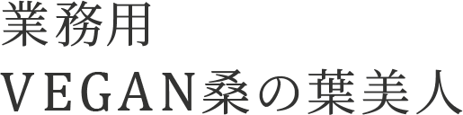
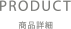

美容業界で創業40周年を迎える
美容会社がプロデュース
エステ市場でシェアNo.1※1の
美容青汁から誕生。
- 商品名
- 業務用VEGAN桑の葉美人
- 販売開始日
- 2024年3月1日
- 内容量
- 250g/1袋
縦22.9㎝ × 横19.8cm × 奥行6.5㎝ - 賞味期限
- 製造日から2年
- 保管方法
- 直射日光、高温多湿を避けて涼しいところに保存して下さい。
※1 2023年8月エステティックジャーナル調べ
リニューアル発売
FOODEX JAPAN2025出展
東京都主催「マッチング会（試食・交流）」出展
ウェルネスフードジャパン2024出展
ヴィーガン認証を取得いたしました。
私たちは、美容青汁「桑の葉美人」を通じて
「美と健康をより多くのお客様へお届けすること」を
使命としています。
国産原料にこだわり、美と健康を毎日の習慣として、
手軽に取り入れられるようにとの想いから、
2002年9月に美容青汁「桑の葉美人」は
誕生いたしました。
長年多くのお客様に愛され続けてきた「桑の葉美人」を
「もっと色々な場所で楽しみたい」
という声を多くいただき、
2024年3月飲食店企業様向けの商品として、
新たに「業務用VEGAN桑の葉美人」を
発売いたしました。
私たちがヴィーガンに注目したのは、
環境保護を強く意識してのことです。
この製品を通じて
持続可能な社会作りに貢献していくこと、
そして、ひとりでも多くの方に美と健康をお届けし、
ウェルビーイングな人生を
共に創り上げることを目指しています。
VEGAN認証の取得
業務用VEGAN桑の葉美人は、
NPO法人ベジプロジェクトジャパンによる
ヴィーガン認証を受けています。
Veggy監修
業務用VEGAN桑の葉美人は、
雑誌Veggyによって監修されています。

自然肥料だけで育てられた農薬不使用の
国産桑葉のみを使用し、
モイスト乳酸菌®（K-1乳酸菌）や、
メロンプラセンタ、
ザクロエキスなどの美容成分も贅沢に配合。
国産の抹茶も配合しているため、
ほんのり甘く飲みやすい、
美容と健康に特化した青汁です。
※「業務用VEGAN桑の葉美人」では、 地球温暖化や食糧問題などの社会課題への取り組みとして、 プラセンタを豚由来からメロン由来へ変更し、 ヴィーガン認証を取得いたしました。
桑葉の栄養成分量は断トツ
桑葉と青汁によく使われている大麦若葉やケールと比較すると、桑葉の栄養成分量が格段に優れています。
桑の葉美人の
“徹底した”こだわり
徹底的にこだわり抜いています。
原料となる桑葉は、自然肥料だけで大切に育てられた国産の桑葉のみを使用し、安全・安心な原料だけを厳選。 畑周辺に化学工場やゴミ処理場などがなく、きれいな空気と水が豊かな土地で育てられています。
原料の受入れから最終製品の出荷に至るまでの全行程において、「適正な製造管理と品質管理」体制の工場で作られています。
美容と健康をサポートする
特別な成分
エイジングケア成分として化粧品にも使われるプラセンタ。ビタミンやミネラルなど美容には欠かせない成分をたっぷり含んでいます。VEGAN桑の葉美人は、植物性プラセンタとして注目されているメロンプラセンタを配合。メロンプラセンタは、老化物質AGEsの抑制や、シワ・たるみを予防すると報告されています。
ザクロは古くから「生命の果実」と呼ばれており、ギリシャ神話にも登場する歴史ある果実です。エラグ酸などのポリフェノールやビタミンCを含み、抗酸化・抗炎症作用による美容や健康への効果も期待されています。
こんな方におすすめ！
- check内側からキレイを目指す方
- check糖質の摂取が気になる方
- check肉食や脂っぽい食事が多い方
- check偏食が多い食生活の方
- check健康維持を目指す方
粉末状で、使い方は無限大！
粉末状なのでどんな素材ともなじみが良く、ドリンクをはじめ、生地に練り込む麺類やお菓子、アイスクリーム、ラテなどの仕上げに粉のまま振りかけるなど、使い方は無限大。
使用例：パンケーキ
抹茶のように、いつものメニューに＋αも。
クセのない風味なので抹茶のような使い方ができ、いつものメニューに＋αで変化を持たせたい時など、フレキシブルなメニュー展開が可能です。
使用例：団子
美容感度の高いお客様や、
インバウンドのお客様向けに。
美容感度の高い女性のお客様や、抹茶人気が高いインバウンド観光客のお客様に特に喜ばれています。
使用例：ラテ